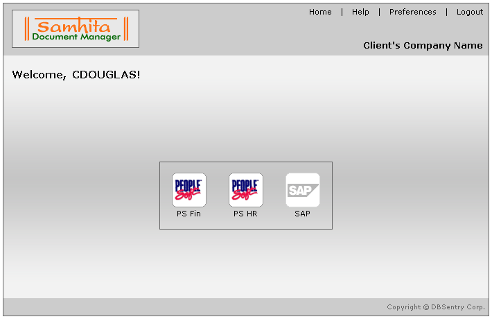

| What is an Adapter ? |
- Adapter facilitates integration of various ERP applications and Samhita.
|
- At present,Samhita provides tight integration with People Soft Financials , People Soft HR and SAP.
|
- Inorder to access adapters , click on the "Adapter" [ ] icon on the home page.
|
- A page with various appropriate enabled adapters is displayed as shown below.
|
 |
Sample Adapter Screen |
| |
- Here , "PS Fin" and "PS HR" are enabled adapters while "SAP" is the disabled adapter.
|
- Not every user has adapter access by default. Only those users whose name appear in adapter specific ACLs will be able to access adapters.
|